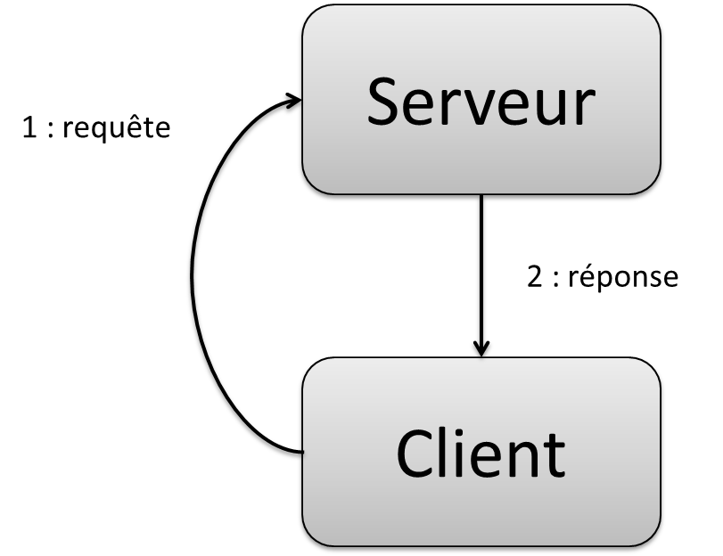

Principes d'architectures
Différences
- Concepts manipulés
- Granularité différentes
- Uses cases multi-application
- Approches asc. vs desc.
Convergences
- Modélisation
- Topologie des problèmes
- Méthodologiques
Principes d'architectures techniques des SIs
Bottom up !
Concept de Tiers ou acteurs
1 tiers
Pas très utile...
1 tiers
Un Tiers est une "couche" du système
(applicatif ou logiciel)
Il est toujours spécialisé
2 tiers
Client / Serveur

2 tiers - les règles :
- Relation maître (client) / esclave (serveur)
- Même protocole de communication (ex: HTTP)
- Serveur : centralise l'information
- Communication par le biais d'un middleware
Le middleware
Littéralement un intergiciel : ensemble de composants logiciels qui assurent l'interface de communication aux données et les appels éventuels aux traitements
Le middleware
Les niveaux d'abstractions et d'encapsulation de ces composants déterminents pour l'ensemble :
- Le coût de réalisation
- La robustesse
- L'évolutivité
- La facilité de mise en oeuvre
Le middleware
Trois grandes catégories de middleware :
- Message oriented Middleware (MoM)
- Objects Request Broker (ORB)
- Transactional monitors ("RPCs")
OSI : Souvenir du cours de réseau ?

Récapitulatif
- Client / Serveur
- 3 tiers
- N tiers
- Distribué
- Orienté services